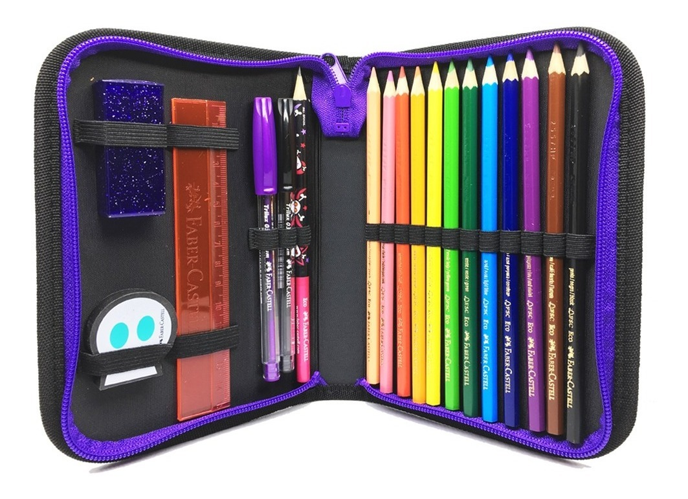
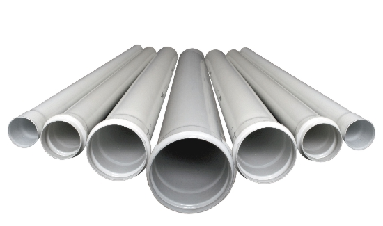

Qual é melhor
Google Lens ou mobileNet?
Hoje falarei em que cada caso o Google Lens e mobileNet é melhor
Uso cotidiano
O Google Lens é melhor nesse caso por ser mais simples, convencional e preciso

Google Lens:
Tenis Nike Air
Mobile Net:
Tenis de corrida

Google Lens:
Lamborghini Gallardo
Mobile Net:
Carro
Google Lens:
Girasol
Mobile Net:
Flor
Google Lens:
Cão Pug
Mobile Net:
Cachorro
Google Lens:
Garrafa de vidro de Coca-cola
Mobile Net:
Garrafa
Uso na progamação
O mobileNet é melhor por ter sido feito para ser usado na progamação expecificamente, tem respostas mais simples, mas mais utilizaveis para indentificação de imagens

Google Lens:
Estojo Escolar Caveirinhas roxo
Mobile Net:
Estojo
Google Lens:
Balão Liso metálico
Mobile Net:
Balão

Google Lens:
Canos pvc
Mobile Net:
Canos
Google Lens:
Canoa Canadense
Mobile Net:
Canoa
Google Lens:
Saleiro com tampa de aço Inox
Mobile Net:
Saleiro
Conclusão
Ambos são bons em respectivas situações, mas para uma pessoa normal a recomendação é usar o Google Lens, mas se você trabalha com produtos de indentificação de imagens, você deve usar o mobileNet